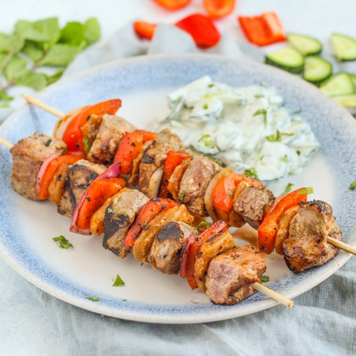

Steak, Bell Pepper & Apricot Skewers with Creamy Cucumber-Mint Salad

Total Time
40 min
Nutrition (Per Serving)
574.3 kcalCalories
45 gProtein
27.8 gCarbs
32.9 gFat
Full nutrition table
| Calories | 574.3 kcal |
| Total fat | 32.9 g |
| Saturated fat | 11.1 g |
| Trans fat | 1.4 g |
| Cholesterol | 106.8 mg |
| Sodium | 109.9 mg |
| Carbohydrates | 27.8 g |
| Fiber | 5.3 g |
| Sugars | 20 g |
| Protein | 45 g |
| Potassium | 825.6 mg |
| Calcium | 147.5 mg |
| Iron | 6.2 mg |
| Vitamin A | 109.2 IU |
| Vitamin C | 81.4 mg |
| Vitamin D | 6.8 IU |
Cookware
Ingredients
- 24dried apricots
- 1English cucumber
- 1 small pkgfresh mint
- 1 cupplain Greek yogurt
- 2red bell peppers
- 1 mediumred onion
- 1 ½ lbstriploin (New York strip) steak
- cumin, ground
- extra virgin olive oil
- paprika
- salt
Steps
- If using wooden skewers, place 8-12 skewers in a shallow dish of water to soak until you are ready to use them.
- Place yogurt, oil, and spices in a large bowl; whisk to combine the marinade.½ cup plain Greek yogurt
2 tsp extra virgin olive oil
2 tsp cumin, ground
2 tsp paprika
1 tsp salt - Cut steak into 1-inch cubes, add to the bowl with the marinade along with the apricots and stir to coat; set aside.1 ½ lb striploin (New York strip) steak
24 dried apricots - Wash and dry the fresh produce.1 small pkg fresh mint
1 English cucumber
2 red bell peppers - Pick mint leaves off the stems; discard stems and, using a clean cutting board, mince the leaves. Place half in a medium bowl (reserving the rest for garnish).
- Add yogurt, oil, and salt to the bowl with the mint and whisk to combine the dressing.½ cup plain Greek yogurt
2 tsp extra virgin olive oil
½ tsp salt - Trim, halve, and slice cucumber crosswise into thin half-moons; add to the bowl with the dressing and stir to combine the salad. Set aside.
- Peel, halve, and cut onion into 1½-inch wide pieces. Trim, seed, and cut bell peppers into 1½-inch pieces. Add both to the bowl with the steak and apricots; stir to coat.1 medium red onion
- Thread steak, apricots, onion, and bell pepper onto skewers, alternating ingredients; place on a plate. (If you don't have skewers, you can cook the steak, apricots, and veggies directly on the grill pan.)
- Preheat a grill pan or regular skillet over medium-high heat.
- Once the grill pan is hot, coat with oil; working in batches if necessary, add the skewers and cook, turning occasionally, until the steak is cooked through and veggies are fork-tender, 8-10 minutes. Remove to a clean plate.4 tsp extra virgin olive oil
- To serve, divide skewers and salad between plates; sprinkle with reserved mint and enjoy!